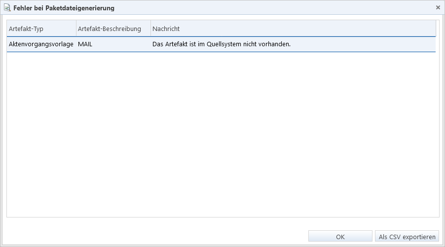

Falls es sich um einen technischen
Fehler handelt (z. B. fehlende Rechte oder Verbindungsabbruch), erscheint eine
entsprechende Fehlermeldung.
Falls es sich um einen technischen
Fehler handelt (z. B. fehlende Rechte oder Verbindungsabbruch), erscheint eine
entsprechende Fehlermeldung.Sowohl beim Erzeugen von Paketdateien aus den im TRMS zusammengestellten Artefaktpaketen als auch beim Installieren von Artefakten in einem IKAROS-System werden Prüfungen durchgeführt, ob die Datensätze gemäß den Vorgaben von IKAROS valide sind (z. B. alle erforderlichen Eigenschaften zulässige Werte besitzen).
Während diese Validierungen von IKAROS selbst vorgenommen werden, ist das Verhalten für Konfliktfälle bei der Installation von Artefakten (z. B. überschreiben oder nicht?) bereits als Transportvorgabe im Artefaktpaket festgelegt und darin in Steuerungsdateien festgehalten.
Transportkontrollskripte für paketspezifische Bedingungsprüfungen
Jedem Paket können Sie des Weiteren Programmcode für sogenannte Transportkontrollskripte beifügen, mit dem vor, während und nach dem Transport Prüfungen im Zielsystem durchgeführt werden können [Link]. Mit einem solchen Skript ist es sowohl möglich, Hinweise und Fehler im Transportprotokoll festzuhalten, als auch den Transport ohne Änderungen am Zielsystem zu verhindern.
Auslösung von BOM-Triggern
Da die Artefakte beim Installieren im Zielsystem die IKAROS-Validierungen durchlaufen, werden dadurch eventuell im Zielsystem auch BOM-Trigger mit dem Auslöser „OnSaving“ für Objekte, die dies unterstützen, ausgelöst; z. B. für EP-Verträge („PcommContract“) oder Aktenvorgangsvorlagen („EventTemplate“).
Fehlermeldungen bei Generierung von Paketen
Wenn das TRMS aus einem Artefaktpaket eine Paketdatei erzeugt, können Fehler auftreten. Die Paketdatei wird in diesem Fall nicht erzeugt.
Falls es sich um einen technischen
Fehler handelt (z. B. fehlende Rechte oder Verbindungsabbruch), erscheint eine
entsprechende Fehlermeldung.
Sollten die Fehler hingegen aus der
Zusammenstellung des Artefaktpakets selbst resultieren, erhalten Sie einen
Dialog mit einer Auflistung der aufgetretenen Fehler:

Abb. 2: Dialog mit Auflistung von Fehlern, die bei der Paketdateierstellung aufgetreten sind
Drücken Sie die Schaltfläche „Als CSV exportieren“, um die Einträge als CSV-Datei herunterladen. „OK“ schließt den Dialog.